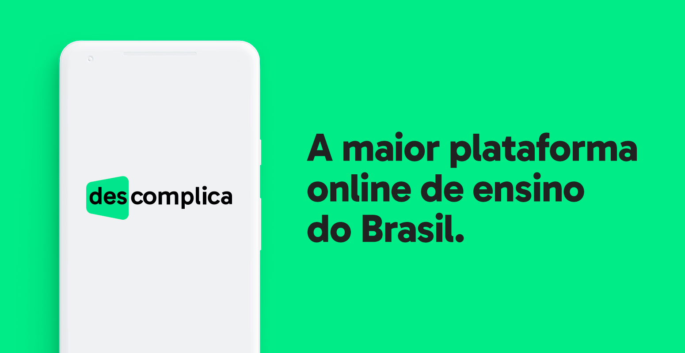
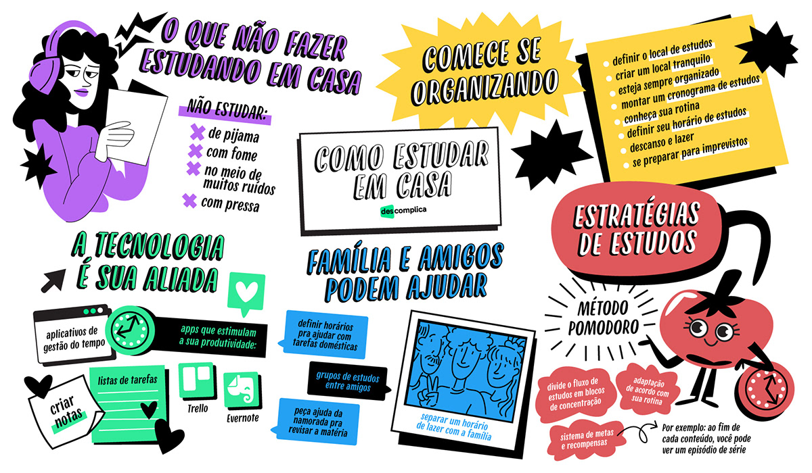

ブラジルの主要独立教育プラットフォーム
ブラジルでは、政府提供の無料プラットフォームに加え、質の高い独立した有料教育サービスも広がっています。 これらのプラットフォームは、大学入試対策、専門職スキルの向上、オンライン学位取得など、幅広い学習ニーズに対応しており、全国の学生や社会人に利用されています。 以下では、特に人気の高い代表的な独立教育プラットフォームを紹介します。
1. Descomplica
「Descomplica」はブラジルで2011年に設立されたEdTech企業で、全国規模でオンライン教育を提供しています。主に高校生のためのENEM・大学入試対策、大学・大学院のコース、さらには公務員試験対策も手掛けています。
 提供内容：
- 動画授業、ライブ講義、練習問題、モニタリング、教材配布
- 高校入試・大学入試・資格対策・大学・大学院までカバー
- 教員研修・教育技術を駆使したサービス
2. Alura
「Alura」はブラジル最大級のプログラミング・テクノロジー教育プラットフォームの一つです。技術者や開発者向けの教育に強みを持ち、企業向けトレーニング（B2B）も提供しています。

提供内容：
- プログラミング、データサイエンス、機械学習、Web開発等のコース
- 企業向けトレーニング対応
- 学習コミュニティ、教材更新頻度が高い
3. Gran Cursos Online
「Gran Cursos Online」はブラジルの競争試験（公務員試験）対策に特化したEdTechプラットフォームです。デジタル教材とAIを活用した学習支援ツールで全国規模の受講者をサポートしています。
提供内容：
- 公務員試験向け講座、問題演習、模擬試験
- AIを活用した学習支援ツール
- 全国の自治体・地域で利用可能
4. Faculdade Única (100% EAD)
「Faculdade Única」は、ブラジルで100％オンライン（EAD）で学べる学部課程を提供する高等教育機関です。ビデオ授業、仮想実験室、バーチャル図書館などを活用しています。

提供内容：
- デジタル教材・ビデオ授業・仮想ラボ
- 全国で有効な学位、MEC認証
- オンラインチュータリング、マルチチャネル支援
6. Hotmart
「Hotmart」はブラジル発のプラットフォームで、講師・クリエイターがデジタル教材（オンラインコース、eブック、ポッドキャストなど）を販売・配信できる仕組みを提供しています。
提供内容：
- クリエイターが教材を制作・販売可能なマーケットプレイス
- 国内外への幅広いアクセス
- 教育、マーケティング、ビジネススキルなど多ジャンル対応